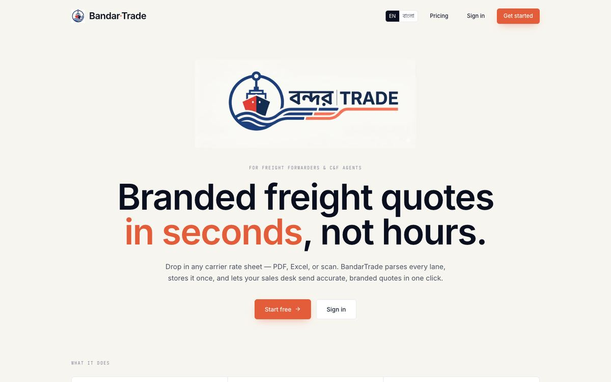
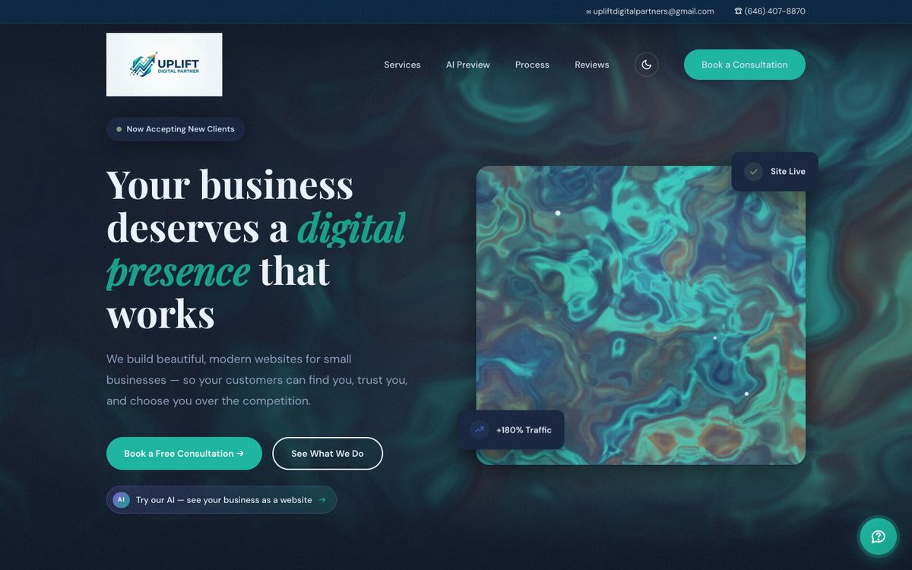
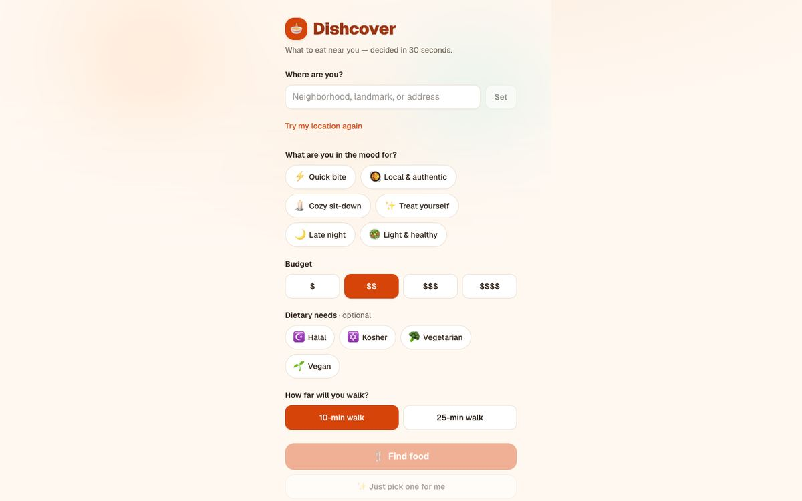
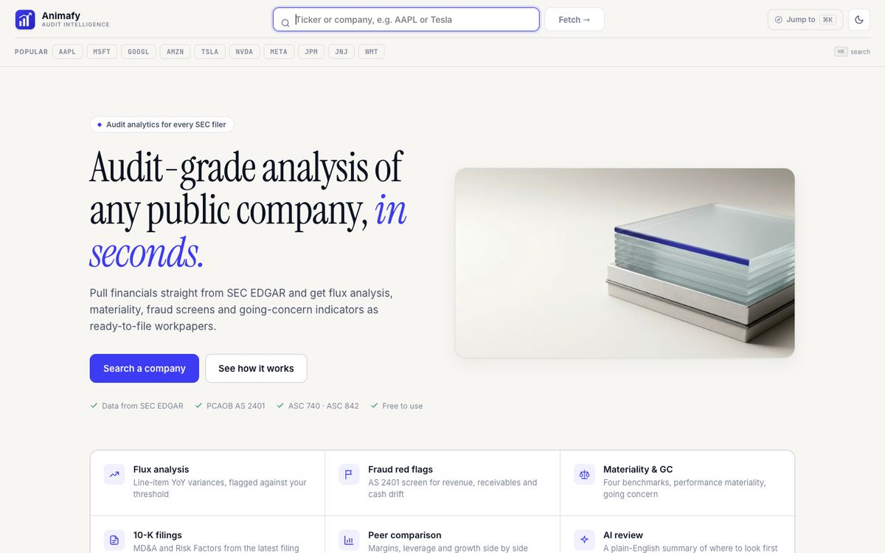
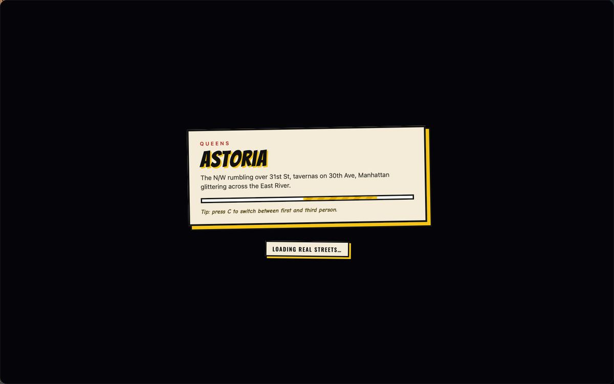
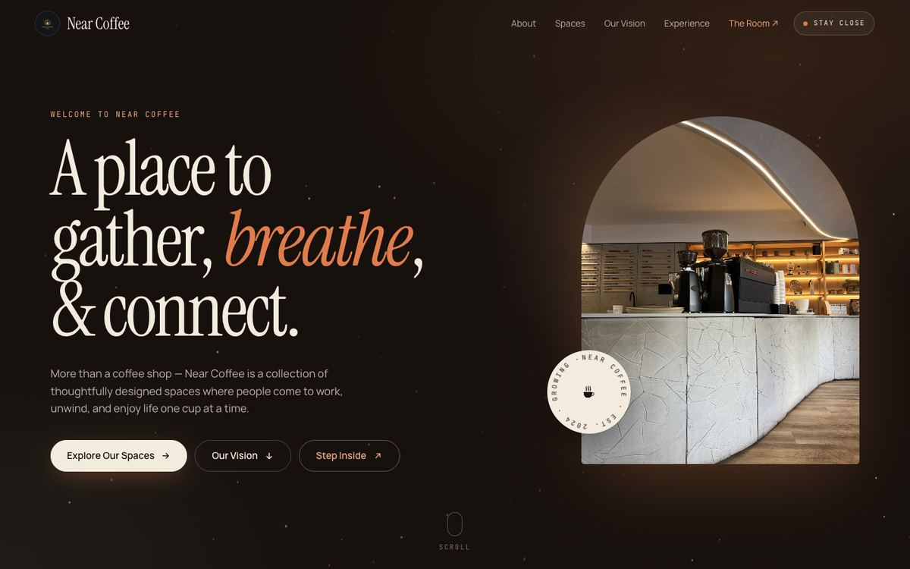
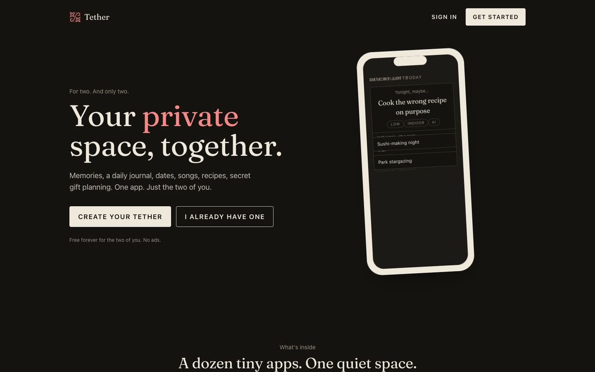
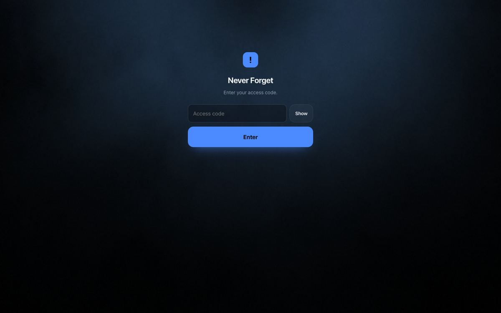
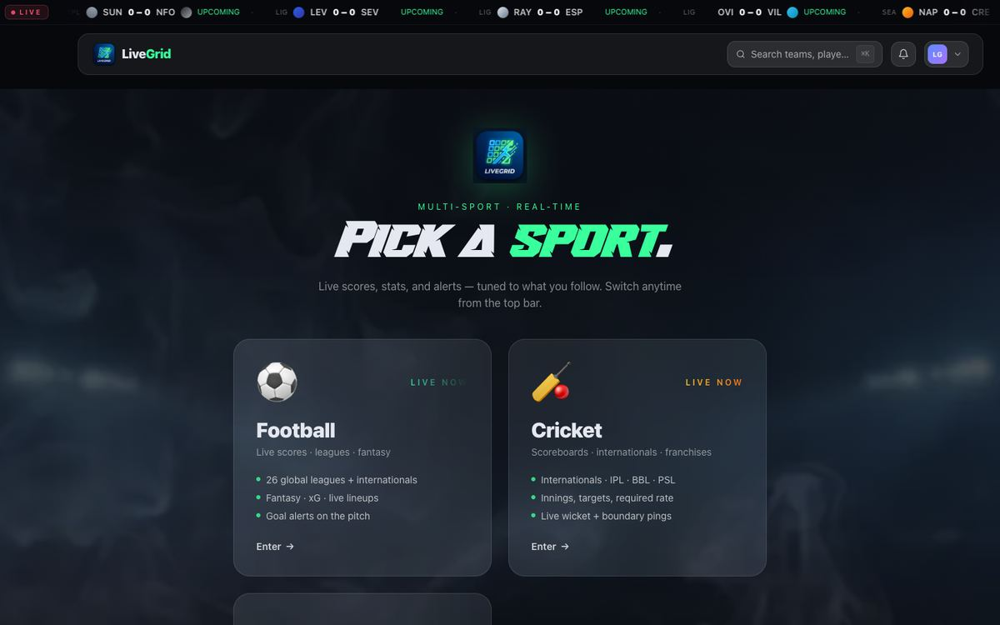

A live freight platform, a web agency and its client sites, and the side
projects I've shipped along the way. Sixteen of them also float around
in the Lab.

Founder · Feb 2026 – Present
A live AI-assisted freight quoting and port trading platform built for Bangladesh, evolved from two earlier prototypes (Smart Quoting Engine and Vela). Its quoting engine turns unstructured rate requests such as "2x 40ft containers, Shanghai to Chittagong" into priced quotes: an LLM extracts origin, destination, container size and quantity, then carrier rates, trucking costs and client markups are applied.
It handles hallucinated ports that aren't in the database, missing route rates and USD-to-BDT conversion. The React UI covers quote review and approval with an English/Bangla toggle, audit log, user management and a chat assistant, and the quote logic is covered by Reqnroll BDD API tests and Playwright E2E tests.

Co-founder and Technical Lead · Nov 2025 – Present
A web agency that builds and modernizes websites and apps for local small businesses. I built and launched the company site on GitHub Pages with a custom domain, DNS migration and HTTPS, plus a conversational booking assistant that validates input, sends owner and client confirmation emails through EmailJS and creates one-click Google Calendar invites with Google Meet links.
Client websites
- Sharif Adornment — jewelry boutique in Queens, NY, with searchable collections, a page per piece, full-screen zoom, rental details and WhatsApp/Messenger enquiries.
- Hololand — clothing brand in Bangladesh, with a GSAP hero, Three.js 3D lookbook, WhatsApp checkout and a bilingual English/Bangla AI stylist, size advisor and gift finder.
- Mozumder — logistics and transportation company in Chattogram, with a scroll-driven homepage film and 3D network map.
- Maria's Closet — rental storefront for South Asian outfits, with a 3D garment carousel, availability checks, rental requests and an owner admin.
- Seams of Safa — storefront for a clothing label on Next.js with Sanity CMS, translations, React Three Fiber, Groq AI and Resend email.
- Primé Cookie — bakery site built with Vite and Three.js, with an interactive "take a bite" hero, crumb particles and a waitlist.
- GREY Cafe — women-owned cafe in Flushing, NY, with menu, photos, reviews, FAQ, hours and an open/closed indicator based on local time.

A restaurant answer engine for travelers: a mobile-first PWA that shows 3 to 5 nearby restaurants by mood and budget, each with its most-praised dishes and prices. An LLM extracts top dishes from review text, stored in Supabase by place to keep API costs near zero, with optional Halal, Kosher, vegetarian and vegan filters.

An audit-planning workspace for any U.S. public company, built on free SEC EDGAR data with Yahoo Finance as a fallback. It surfaces auditor's reports, critical audit matters, material weaknesses, restatements and late filings, benchmarks against industry XBRL percentiles, and generates Excel workpapers and an AI planning-memo draft.

A cel-shaded, comic-style browser game set in New York neighborhoods, playable on desktop and phone, with walking, biking and driving. Every street, building, crowd, traffic pattern and sound is generated in code, with a day-to-night cycle and subway travel between neighborhoods.
An in-network doctor finder that answers "which doctors near me take my insurance," starting with Medicare Advantage plans in NYC. It syncs public CMS-mandated provider directory FHIR APIs and the NPI Registry into Postgres through payer adapters, labels every result with its source and freshness, and is built for 12 languages including right-to-left, to WCAG 2.2 AA.
A native Android and Android Auto app that streams 50+ live air-traffic control feeds and police, fire and EMS scanner feeds, sorted by distance. It supports background playback, lock-screen controls, favorites and Android Auto in the car.

A cafe concept you can walk into from a browser tab: a converted barn below the Tetons, with lighting that matches the visitor's local time. Vercel cache headers are tuned so hashed assets cache for a year while textures refresh weekly.

A web app for couples that I designed, built and launched, owning product, UI/UX, brand identity and front-end state management end to end, with a responsive interface shipped to production on Vercel.

A weekly timesheet reminder that starts polite on Friday morning and escalates in frequency and tone until submission is confirmed. Web push notifications are delivered from serverless functions, with streak tracking and a partner view.

A real-time sports analytics web app that tracks professional football statistics, historical scoring records, international player metrics and match analytics, including the data pipelines and interactive front end behind the stats views.
Eat Your Way
In development
An Android game built in Unreal Engine 5.7, themed around the food scenes of Jackson Heights and Flushing in Queens.